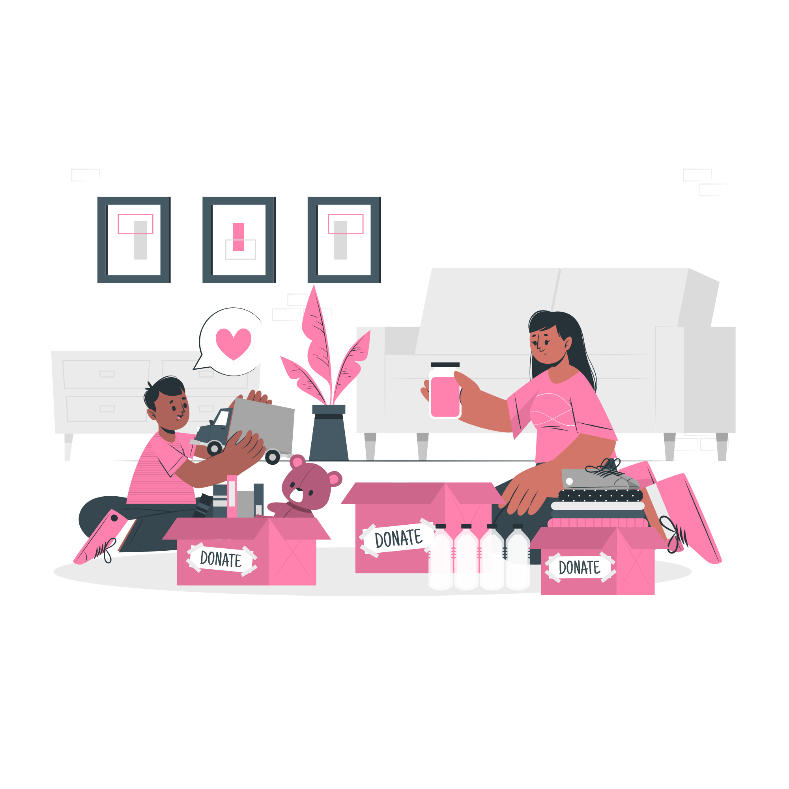

Canada Child Benefit (CCB): This is a tax-free monthly payment made to eligible families to help with the cost of raising
children under the age of 18. Single moms can apply for the CCB by filling out
a form on the Canada Revenue Agency (CRA) website.
Employment Insurance (EI): Single moms who have lost their job through no fault of their own may be eligible for EI benefits.
To qualify, you must have worked a certain number of insurable hours in the past year,
and be available and actively looking for work.
Childcare Subsidies: Some provinces in Canada offer childcare subsidies to help low-income families pay for the cost of childcare. Eligibility criteria varies by province, so it's best to check with your local government to see if you qualify.
Education Resources
Canada Student Grants and Loans: Single moms who are pursuing post-secondary education can apply for grants and loans from the Canadian government to help cover the costs of tuition, textbooks, and living expenses.
Adult Learning and Literacy Programs: These programs provide adult learners with the skills they need to improve their literacy and numeracy skills, upgrade their education, and gain valuable job skills.
Second Career Program: This program provides financial support to eligible individuals who are interested in pursuing a new career or upgrading their skills. Single moms who are looking to re-enter the workforce can apply for this program.
Indigenous Bursaries Search Tool: This tool provides a comprehensive list of bursaries, scholarships, and other funding opportunities available to Indigenous students who are pursuing post-secondary education.
Childcare Subsidies: As mentioned before, some provinces in Canada offer childcare subsidies to help low-income families pay for the cost of childcare. This can be particularly helpful for single moms who are attending school or working.
The Canada Learning Bond: This is a program that provides eligible children with a financial incentive to start saving for their post-secondary education. Single moms can apply for this program on behalf of their children.

Charities And Organizations
Single Mothers' Alliance of BC: This organization is based in British Columbia and provides support, advocacy, and resources to single mothers in the province. They also offer workshops and events to help single moms build their skills and connect with other women.
YWCA Canada: The YWCA has several programs across Canada that support single mothers, including housing programs, employment services, and parenting programs.
Single Parent Association of Newfoundland: This organization provides resources and support to single parents in Newfoundland and Labrador, including counselling services, financial assistance, and educational programs.
Single Moms, Fresh Start: This charity is based in Ontario and provides financial assistance to single mothers to help them cover the costs of basic necessities such as food, clothing, and housing.
Mom2Mom: This organization is based in Calgary and provides peer support, mentorship, and resources to single moms in the city.
Single Moms United: This organization is based in Toronto and provides support, education, and resources to single moms in the Greater Toronto Area.